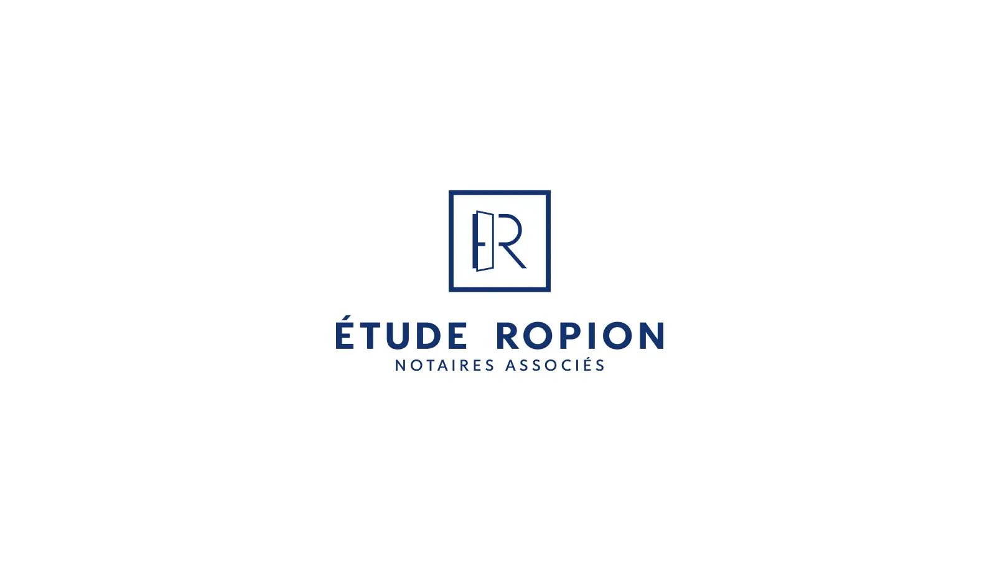
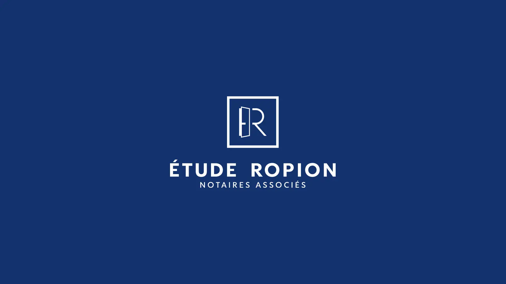
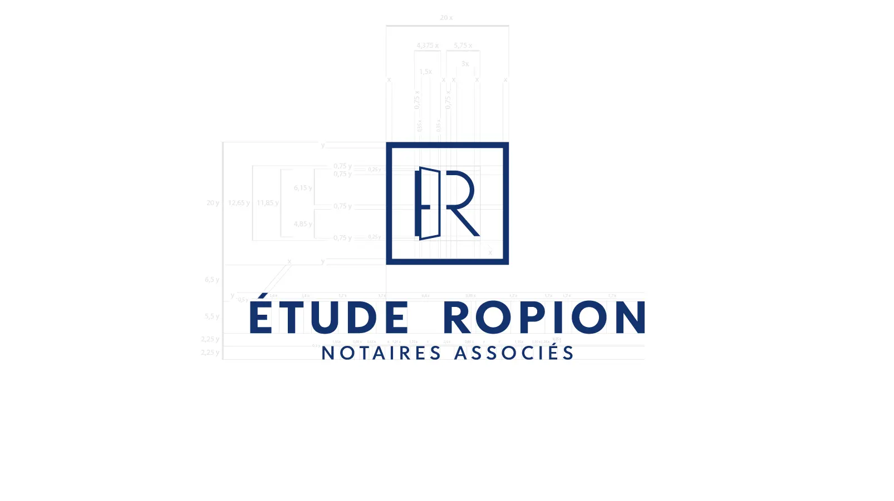
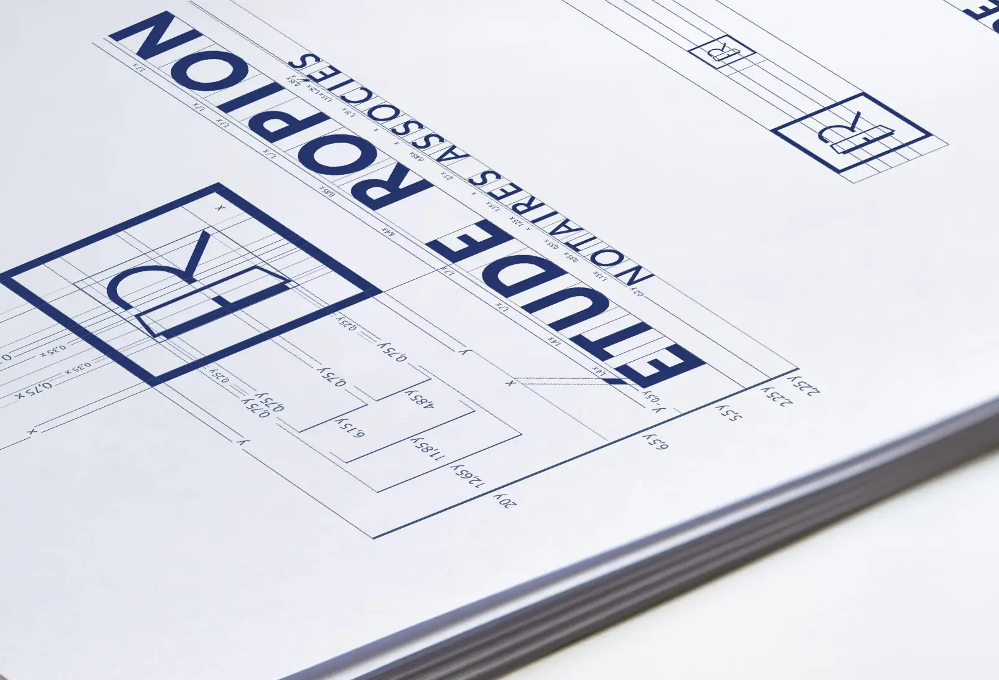
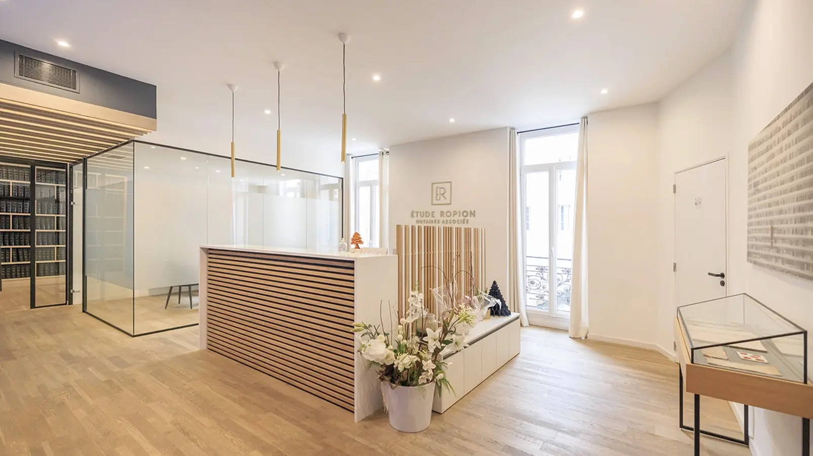
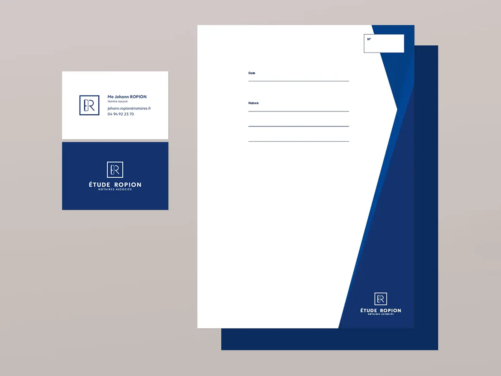

Étude notariale Ropion — Identité Visuelle & Logo
Création complète d'une identité visuelle pour une étude notariale à Toulon, dans le Var : logo, charte graphique, couverture de copie exécutoire, intercalaire, papier à en-tête, pochette de présentation, signature de mail, tampon officiel et plaque professionnelle.
Logotype Institutionnel
Me Johann ROPION s'est dévoué à son projet d'identité visuelle, il tenait sincèrement à ce qu'elle représente son office au mieux, en gardant tout de même les codes et la rigueur qu'inspire le monde notarial. La porte ouverte mêlée au E a été une piste beaucoup appréciée, symbole de l'ouverture sur le dialogue et du rapport humain.





Documents de Communication & Édition Print
Chaque point de contact avec la clientèle doit refléter le prestige de l'étude. Voici quelques exemples de supports d'impression réalisés : design des cartes de visite et des intercalaires de dossiers.
